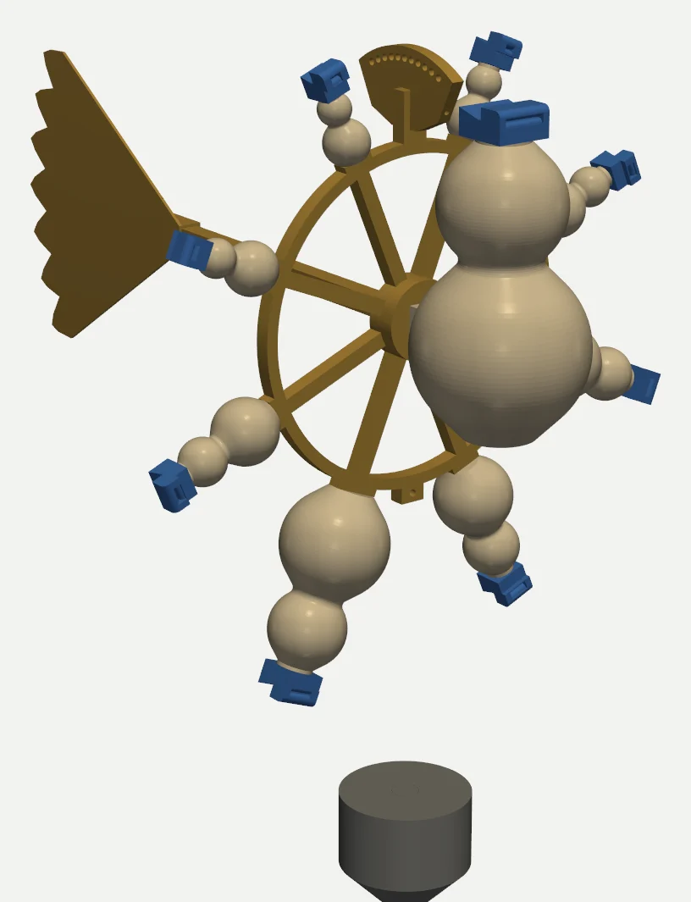
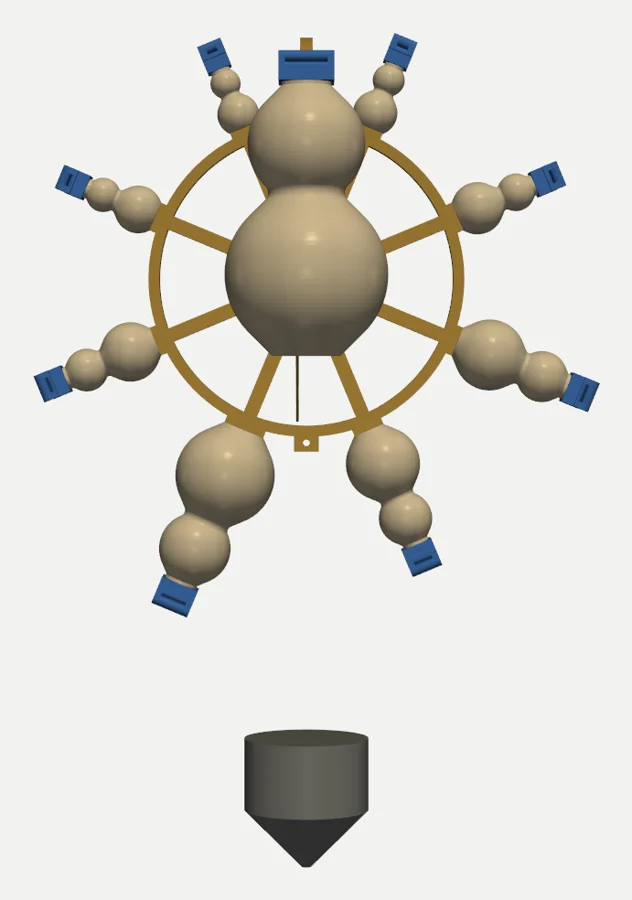
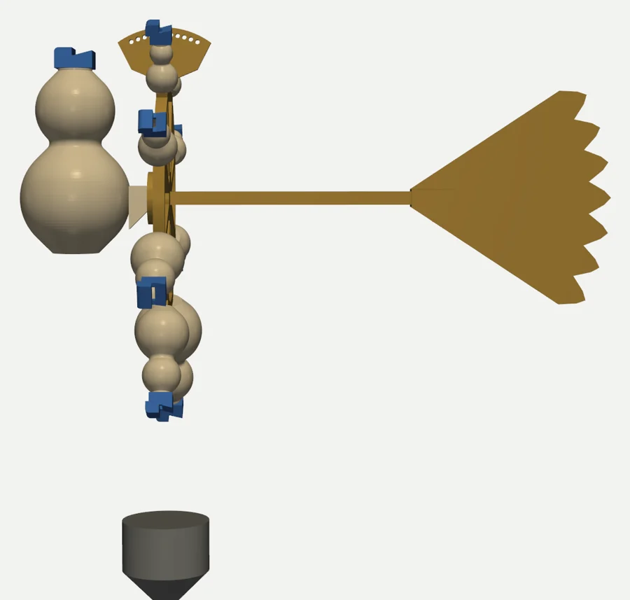
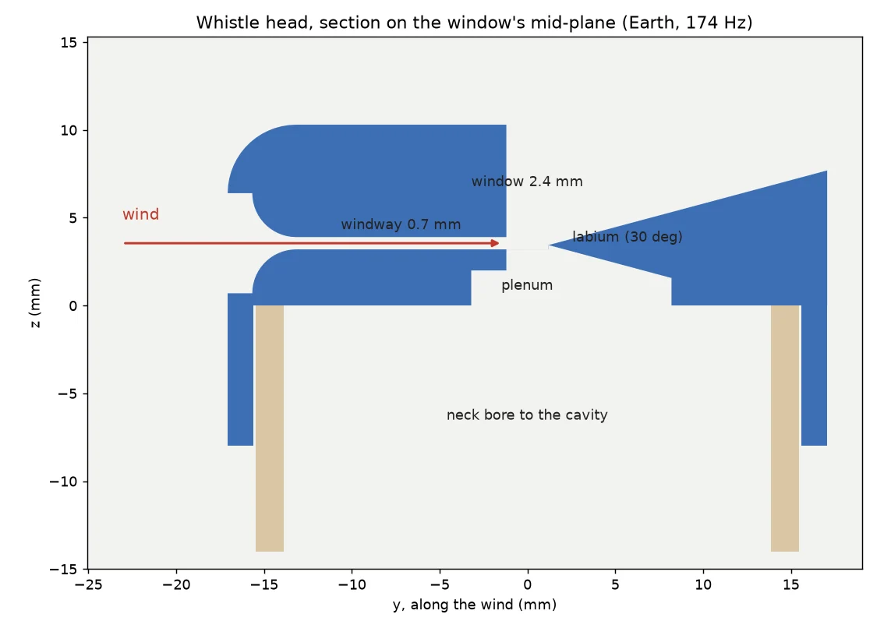

A hollow vessel with a narrow mouth holds one note. The air in its mouth is a mass, and the air inside is a spring. Blow a thin sheet of air across the mouth onto a sharp edge, and the sheet flaps in time with that spring, pumping the note louder at each swing. That is a Helmholtz resonator driven by an edge tone. It is the ocarina, the bottle you hum across, and the Chinese pigeon whistle that sings while the bird flies.1
This instrument hangs in the open and lets the wind do the blowing. Nine printed gourds are tuned to the nine Solfeggio tones and hung as a geocentric cosmos. Earth (174 Hz) sits at the centre. Around it a wheel carries the seven planetary spheres and, at the top, the eighth sphere of the fixed stars, the Ogdoad. A tail vane keeps every mouth facing into the wind.
Every voice shares the same whistle cut-up, so each speaks in its own band of wind speed, in order of pitch. A breath of air wakes Earth alone. As the wind rises, it climbs the spheres one by one, and the Ogdoad sings only in a fresh breeze. In the Hermetic Poimandres, the soul climbs the same eight steps and, at the eighth, hears the powers singing.6
Push the air in a bottle's neck inward and you squeeze the air in the body behind it. The squeezed air pushes back, overshoots, and rebounds. The plug of air in the neck is the mass, and the body's air is the spring. Like any mass on a spring, it rings at one frequency:
Here c is the speed of sound, A the mouth's area, V the cavity's volume and L′ the mouth's effective length. A bigger body means a softer spring and a lower note. A wider mouth means a lighter plug and a higher note. The vessel's shape hardly matters, so long as it is small next to the wavelength. That is why a gourd, a sphere and a bottle all obey the same law.2 Computed
Hermann von Helmholtz worked this out in the 1860s and turned it into a tool. He made graded brass spheres, each with a nipple to put to the ear, and used them to pick single overtones out of a voice or a violin. Each sphere answered only its own note. It is the first acoustic spectrum analyser.2 Documented
Three details matter for a printed whistle, and this page's solver handles all three:
A resonator only rings when something keeps pushing it in time. The whistle head turns the wind into that push. A bellmouth gathers the wind, and a windway 0.7 mm high squeezes it into a flat jet. The jet crosses the 2.4 mm window (the vessel's mouth) and splits on a 30° labium.
A jet is unstable. The smallest sideways nudge at the windway grows as it travels, so the sheet arrives at the edge waving. When the cavity breathes out through the window, it nudges the jet outward. A moment later the jet arrives on the outside of the edge and stops feeding the cavity. When the cavity breathes in, the jet tips inside and pours air into it. If the trip across the window takes the right fraction of a cycle, every push lands in step and the note builds. Computed geometry, Model timing.
The ripples on a jet travel at about half its speed. The trip's timing is therefore set by one number, the jet's Strouhal number, St = f W / U. Here W is the 2.4 mm window and U the jet speed. Recorders and ocarinas speak best near St ≈ 0.15–0.25.3 If the jet is too slow, it is late and nothing sounds. If it is too fast, it skips into hiss. This page models the speaking band as 0.10 < St < 0.40, with the best response at 0.22. Model
The jet speed itself comes from the wind. The intake faces the wind, so the windway is fed by the wind's stagnation pressure and the jet leaves at nearly wind speed, taken here as 85 %. The head's tall block stands just ahead of the window and shelters it. The jet then crosses the window through slower air, so the shear that makes it wave is not washed out by the passing breeze. Model
Pigeon whistles work exactly this way. Strapped between a pigeon's tail feathers, a gourd or bamboo body with several mouths sings at flight speed, about 15–20 m/s. Beijing's flocks once filled the sky with them, and the whistle-makers signed their work. The craft is now listed as municipal intangible cultural heritage.1 Documented
Hold St = f W/U fixed and give every voice the same window W. A voice's speaking band then slides up the wind scale in proportion to its pitch. Earth at 174 Hz wakes in about 1.2 m/s, which barely moves smoke. The Ogdoad at 963 Hz needs 6.8 m/s before it starts and sings best near 12. Nobody arranged the order: the ascent falls out of the physics. Model
Each band spans a factor of four in wind speed, so neighbours overlap. In any given wind a few adjacent spheres sound together, and the group drifts upward as the wind strengthens and back down as it eases. Gusts walk the hymn up and down the ladder.
Play each voice alone, or let a gusting wind play them all. A Helmholtz voice is close to a pure sine: the cavity has no harmonic overtones, and its next mode is far above. What colours it is the rush of the jet, so each voice here is a sine plus a little breath noise filtered around its pitch. The synth also lets each pitch rise slightly as the wind rises past its best speed, as a vessel flute does when overblown. Model
Pure tones clash only when they are close. Two sines beat at their difference frequency. Once the beating gets faster than about 15 per second it turns into roughness, and it fades again once the tones are more than a critical band apart. The ratios that matter for rich tones (fifths, thirds) hardly matter for sines. Plomp and Levelt measured this curve in 1965.4 Documented
So the Solfeggio set, which is not a pentatonic scale, mostly sits well on a choir of sines. Its steps are spaced about 111 Hz apart, which is beyond the worst roughness. The one real clash is 396 against 417, which beat 21 times a second, the roughest possible spacing. On the ladder they are also neighbours, so in a 3–10 m/s wind Mercury and Venus will burr together. Computed
The Poimandres, the first treatise of the Greek Corpus Hermeticum (probably written in Roman Egypt in the first centuries AD), describes what happens to a knowing soul at death. It rises through the seven planetary zones of the Harmony. At each zone it gives back one of the energies that bound it, from growth and waning at the Moon to ensnaring falsehood at Saturn. Then:6 Tradition
… he cometh to that Nature which belongs unto the Eighth, and there with those-that-are hymneth the Father. Corpus Hermeticum I.26, tr. G.R.S. Mead, 1906
A Nag Hammadi tractate, The Discourse on the Eighth and Ninth, has a teacher lead a pupil into the same Ogdoad, where the pupil too hears silent hymns.7 Older still is the Pythagorean idea that each planetary sphere sounds a note as it turns: the music of the spheres.8 Tradition
The chandelier hangs that cosmos literally. Earth is the big gourd at the centre. The wheel's eight rays are the Moon, Mercury, Venus, the Sun, Mars, Jupiter and Saturn, in the Chaldean order the treatise climbs, then the Ogdoad. Three things line up with the treatise: the rays climb the wheel in four tiers, pitch rises with height, and the wind wakes them in that same order. The pairs are split left and right so the wheel hangs level, and so the climb zig-zags across the axis like the two serpents on Hermes' caduceus. Computed balance.
The nine frequencies are modern. The six core tones (396, 417, 528, 639, 741, 852 Hz) were put forward in the 1970s–90s by Joseph Puleo, who said he decoded them from verse numbers in the Book of Numbers, and popularised by Leonard Horowitz. 174, 285 and 963 were added later. The names borrow the syllables ut, re, mi, fa, sol, la from Guido of Arezzo's eleventh-century teaching hymn Ut queant laxis. That hymn is real, but it carries no frequencies, and nothing links these numbers to Gregorian chant.5 Documented
Claims that these tones heal, repair DNA or carry a special power are Modern claim and nothing more. The instrument uses them because they were asked for, and because nine of them fit nine spheres. The physics on this page would work identically for any nine pitches.




Also needed: an M3×20 bolt and nut (crown), a ball-bearing fishing swivel and cord, a steel split ring (bob), dry sand or steel shot, and epoxy or a gap-filling CA.
Download all STLs (zip)Test each voice indoors before assembly. Blow across its intake with a hair-dryer on cool, or with a desk fan, and read the pitch with any tuner app. The solver puts each voice on pitch, but a printed gourd's real volume, wall stiffness and the jet's own loading can shift it by tens of cents.
Generator: projects/ogdoad_wind_chandelier/. voices.py solves the
acoustics, and chandelier.py builds, measures, checks and exports the parts. Change a
constant and rerun. Everything on this page is computed from the same voices.json.